スマホのブラウザだけで、卓組みから順位計算まで完結します。
計算式：素点（(最終点 − 30,000) ÷ 1000）＋ ウマ（1位 +20 / 2位 +10 / 3位 −10 / 4位 −20）
入力内容は自動保存されます。画面を閉じても消えません。
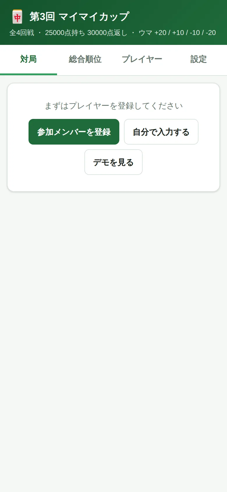
| 対局 | 卓組みの作成と、点数の入力 |
|---|---|
| 総合順位 | 全員の順位をリアルタイム表示 |
| プレイヤー | 参加者の登録、チップの増減 |
| 設定 | ウマ・回戦数・賞金などの変更 |
ボタンの使い分け
参加メンバーを登録…名簿だけ登録して本番を始める／
自分で入力する…名前を手入力／
デモを見る…点数まで入った例で操作を試す。
デモのあと本番を始めるときは、設定タブの「対局結果をリセット」で消してください。
プレイヤータブ →「参加メンバーを読み込む」を押すだけで名簿が入ります。
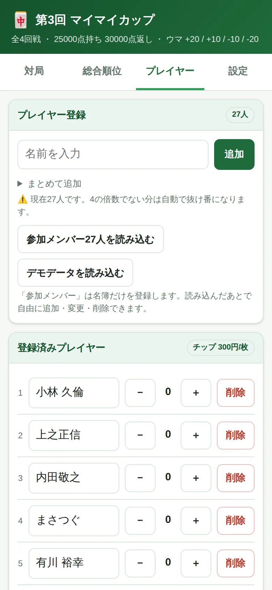
読み込んだあとは自由に編集できます。名前をタップして書き換え、上の欄から追加、右の「削除」で除外。
− ＋ はチップの増減です（役満ボーナスやチョンボの記録に）。
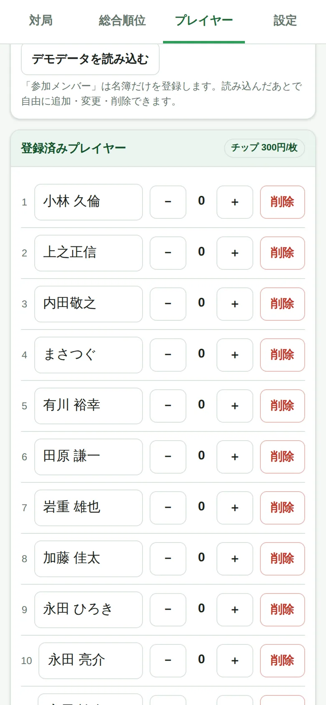
人数が4の倍数でなくてもそのまま進められます。あぶれた人は自動で抜け番になり、 抜け番の回数が少ない人から選ばれるので偏りません。27人なら6卓＋抜け番3人です。
対局タブで回戦を選び、「卓組みを作成」を押すだけです。
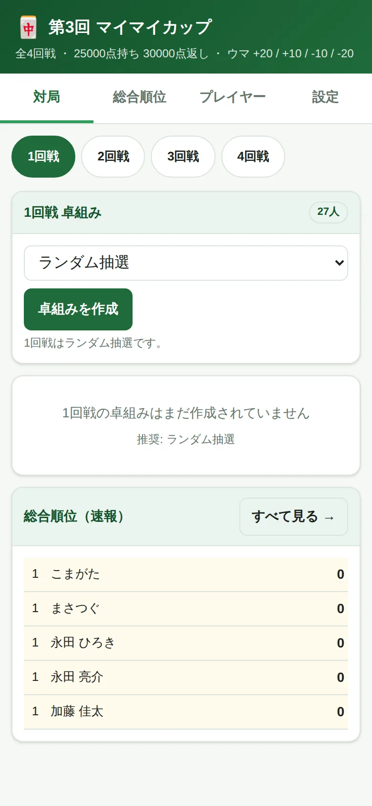
| 1回戦 | ランダム抽選 |
|---|---|
| 2回戦 | 順位卓（1回戦の1位同士・2位同士…） |
| 3回戦以降 | 総合順位順（1〜4位 / 5〜8位 …） |
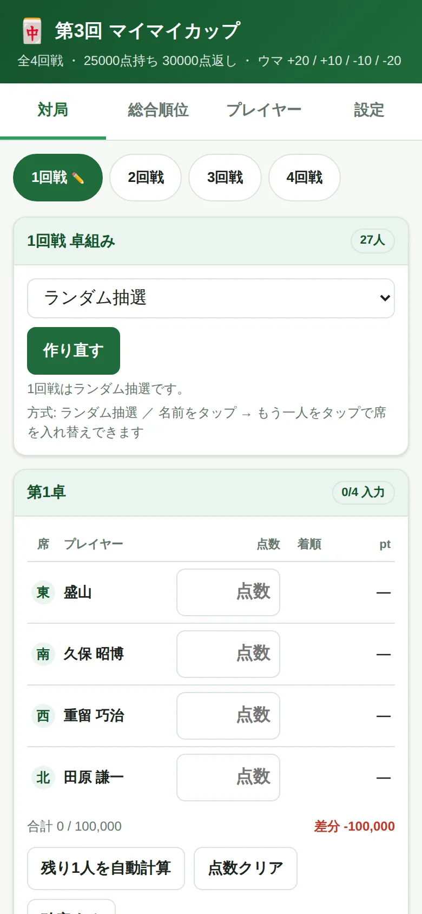
席を入れ替えたいとき…名前をタップ → 相手の名前をタップ。抜け番の人とも入れ替えできます。
やり直したいとき…「作り直す」。点数入力済みなら確認が出ます。
終局後の持ち点をそのまま入力します（例：42300）。4人ぶん揃うと着順とポイントが自動計算されます。
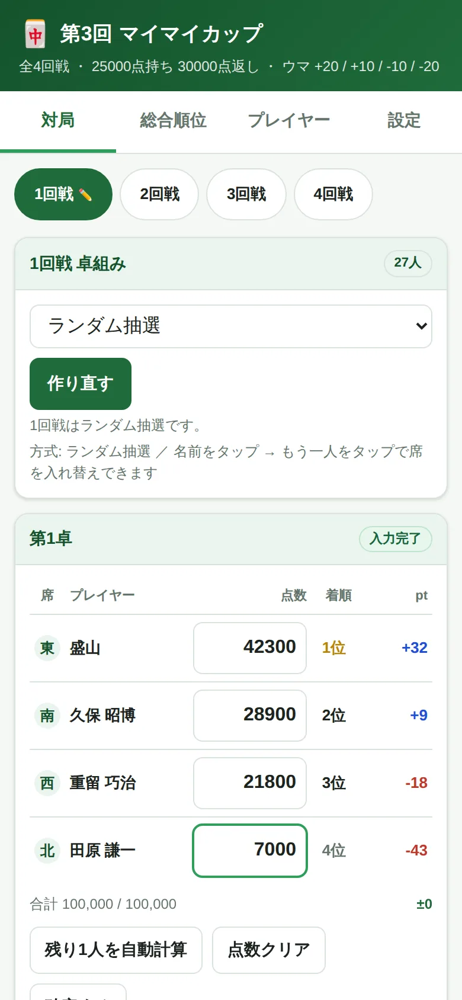
同点のときは席順（東 → 南 → 西 → 北）が上位。トビ（マイナス点）もそのまま入力できます。
点数を入力した瞬間に反映されます。
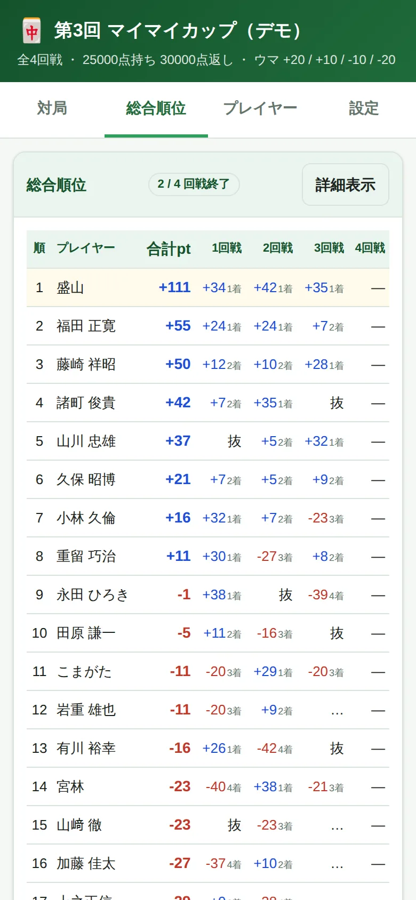
| +38 1着 | その回戦のポイントと着順 |
|---|---|
| … | その卓はまだ入力の途中 |
| — | まだ対局していない |
| 抜 | 抜け番 |
右上の「詳細表示」で、素点合計・平均着順・着順分布・チップ・賞金も表示されます。
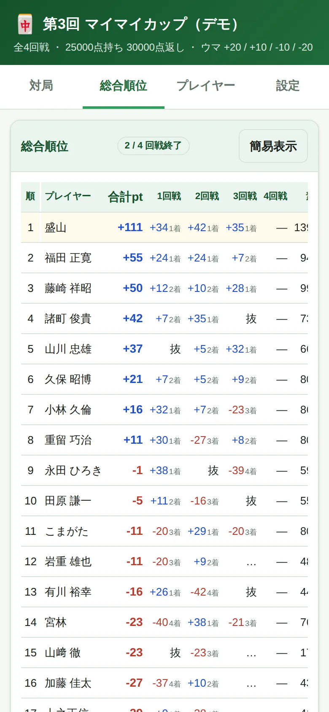
同点は 素点合計 → 1位回数 → 平均着順 の順で判定します。「CSVで書き出す」も使えます。
流れは1回戦と同じです。上の 2回戦 をタップ →「卓組みを作成」→ 点数入力。方式は自動で選ばれます。
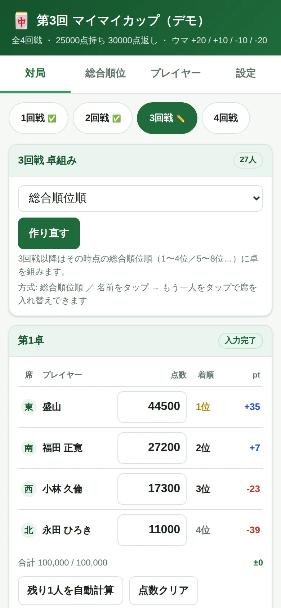
回戦タブの ✅ は入力完了、✏️ は入力途中を表します。
設定タブで変更でき、すべての計算がやり直されます。
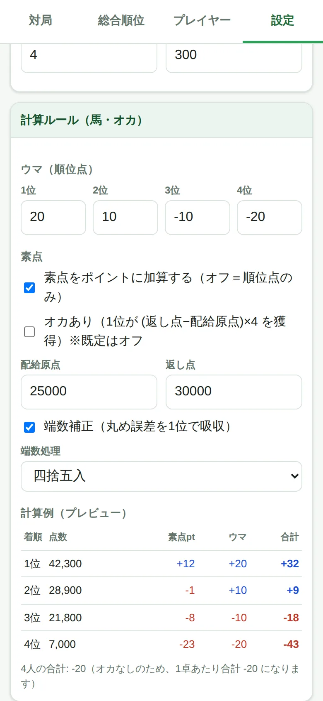
| ウマ | +20 / +10 / −10 / −20 |
|---|---|
| 素点を加算 | オフにすると順位点のみの計算に |
| オカあり | 初期はオフ。オンにすると1位に +20pt |
| 配給原点 / 返し点 | 25,000 / 30,000 |
| 端数補正 | 丸め誤差を1位で吸収 |
一番下の計算例（プレビュー）で、変更した結果がその場で確認できます。
学習タブには、初めての方向けの2つのページがあります。大会前の予習にも使えます。
用語集 … 大会規定の言葉（ウマ・素点・アリアリ・チョンボなど）から役の名前まで58語。 待ちの形や役は牌の図つきで、アガリ牌も並べて表示されます。上の検索欄で絞り込めます。
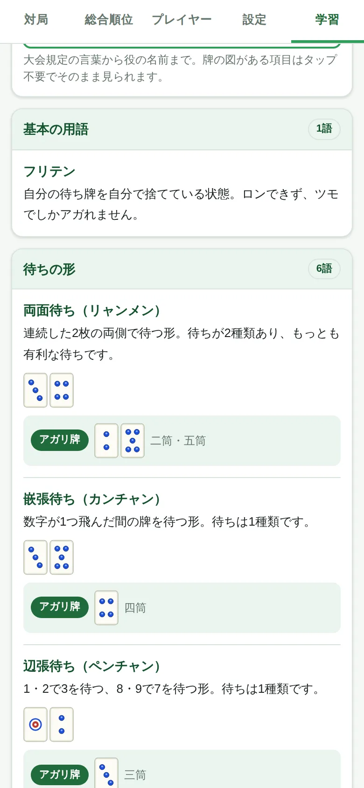
聴牌トレーニング … 13枚の手牌を見て、アガリ牌をすべて選ぶ練習です。 入門・中級・上級の3段階、全18問。
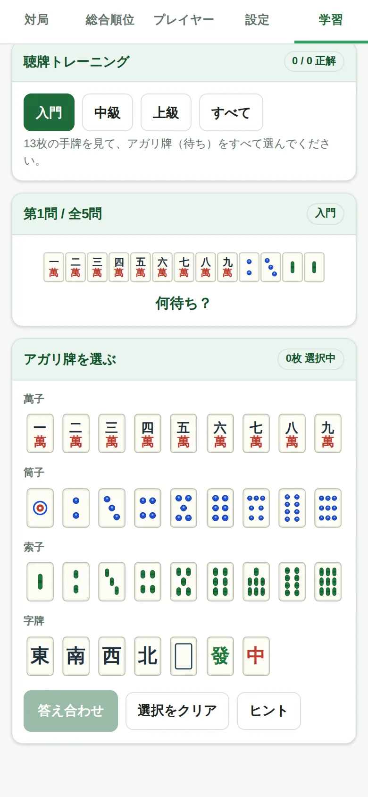
答え合わせをすると、正解の牌と形の名前、間違えた場合は「見落とし」と「余分」が表示されます。
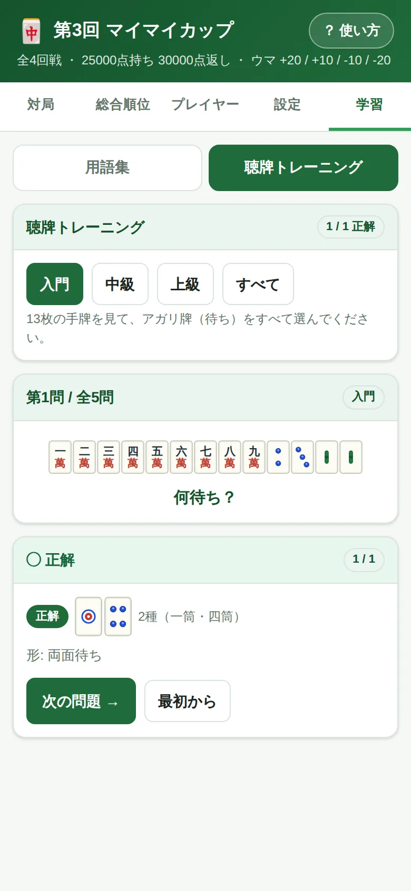
答えはアプリが毎回計算して出しています。九蓮宝燈の9面待ちや国士無双の13面待ちも正しく判定します。
このガイドはいつでもヘッダーの「使い方」から開けます。